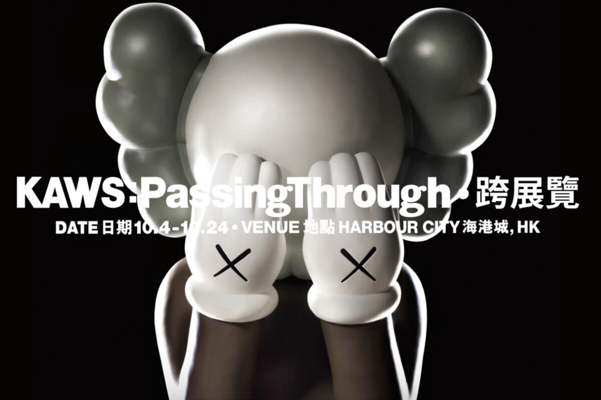

- Served local Asian communities and Asian brands entering North America through positioning, project planning and execution.
- 服务本地亚裔社区与进入北美市场的亚洲品牌，全面负责品牌定位、项目策划、客户沟通与执行统筹。
- Led community events such as Toronto Night Market, covering booth management, site flow and stage programming.
- 主导 Toronto Night Market 等多场大型社区活动，从招商、摊位管理、现场动线规划到舞台节目编排。
- Designed bilingual marketing materials and supported WeChat, Facebook and Google Ads assets.
- 设计中英文广告横幅、宣传手册、品牌宣传页等市场推广物料，并参与线上广告素材开发。
Oct 2015 - Mar 2019 / Toronto
2015年10月 - 2019年3月 / 加拿大 多伦多
Pumpkin Seed Solutions Inc.
Co-founder of a multicultural event planning and brand promotion company.
创办人，合伙创立多元文化活动策划与品牌推广公司。
Back to Work Experiences返回工作经历